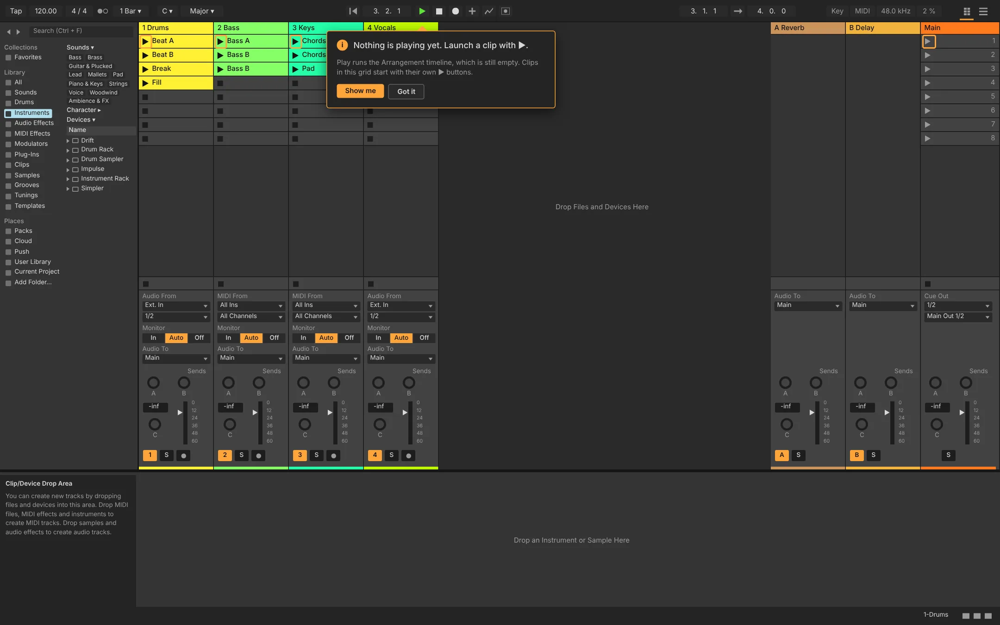

From jam to song in Ableton Live 12
Clickable prototype · Research Brief 3
Beginners lost the thread between jamming in Session View and recording a song. This prototype shows the three fixes in Live’s own interface: a hint the first time Play is silent, a labeled Record to Arrangement button with a confirmation, and a labeled Back to Arrangement state. With it, 5 of 6 beginners finished unaided (1 of 5 before), in 4 minutes instead of 11.
Click what you would use (Show me, Record to Arrangement, Stop, View Arrangement, Play Arrangement), or step through with Next and Back. Clicking anywhere else shows what is clickable.

A recreation made for this portfolio: each screen is an image, with clickable areas where the prototype’s links are. Ableton Live belongs to Ableton AG; this prototype is not affiliated with or endorsed by them. The tracks, clips and project shown are made up, and the icons are generic.